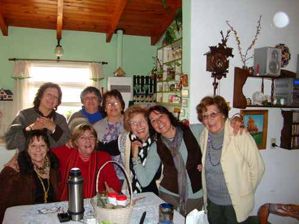
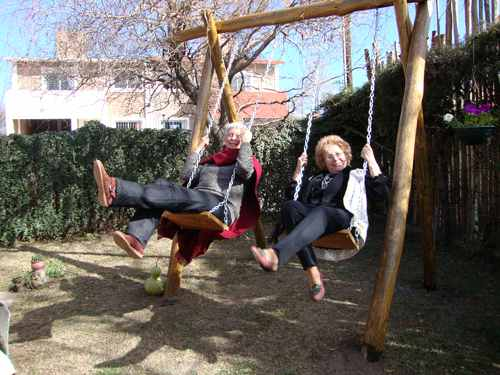
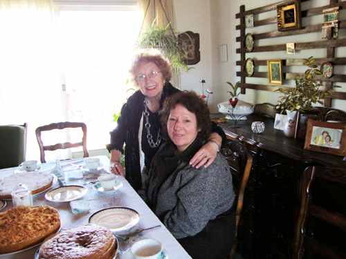
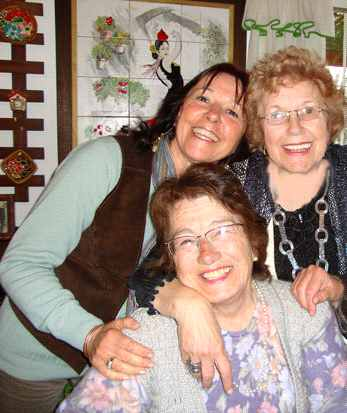

El año 2012, nos llevó a una de las más hermosas personas de quien disfrutamos su amistad por largos años y sentimos hoy su pérdida irreparable...
Homenaje a Mabel Fernández de Pertile
Autor: Graciela María Casartelli (Córdoba, Argentina)--------------------------------
Imágenes tomadas de la PPs creada por Giovanna Barbará cuando festejamos sus primeros 83 años en casa de Mabel
 |
En dónde estarás flotando…
¿En esa hoja acorazonada verde claro?
¿En esta flor amarilla intenso?
En el helecho que cuelga gracioso de la viga de tu quincho encantado…
O en aquellas alas blancas que se pierden en la lejanía….
¿Dónde? ¿Dónde?
En qué lugar encontrar tu alma,
que vibra en muchas tonalidades amigas;
acompaña sin cansarse, se brinda, congrega
se apasiona, canta… se entrega…
 |
En dónde flotas que no puedo verte,
al tiempo que miles de sucesos compartidos,
me giran y me giran…
|
Recordándote…
Y sabiendo, que será difícil conocer a alguien
con tu capacidad de entrega,
sin que espere algo a cambio;
por el simple don de comprender, de ponerse en el lugar del otro,
antes que juzgar o rechazar.
Estás allí. En esa hoja, o en esta guía de una flor colgante,
pendiente del borde de tu hamaca.
En los miles de detalles que festejaban ese lugar paradisíaco
que te cobijaba.
En el reloj “Cucú” , que quedará anunciando cada hora,
aún sin cuerda, mientras
los adornos de los muebles y las paredes,
bailarán su danza de pequeños sortilegios.
Y quedamos, amiga , amándonos…
entre ese grupo de rosas perfumadas,
que procuraban su más elegante aspecto, sólo para reunirnos
en un momento cualquiera.
Vamos advirtiendo, cuántos espacios se convierten en vacíos y
sentimos el alma, vacía de vos.
Amiga que tantas veces, te “jugaste” por lo que sentías
era correspondiente concretar.
La más bella flor del interior de tu casa,
mansión magnífica; están en esa rama, en esa pequeña flor
el alambrado, una simple piedra, un nido y el aleteo solitario
que has dejado en derredor, como ese perfume
que anunciaba tu presencia
Y extrañándote,
estás cerca, pero ya no te podemos ver.
La mesa con sus finas tazas de té, quedó oculta
tras el delicado mantel, que movido por el viento cálido,
cobijó los platos humeantes y exquisiteces preparados por tu ternura.
Ternura que con gracia y sonrisas,
llenaba los ambientes, las calles de tu pueblo y sus jardines
Y que, aunque fuera noche lograba amanecer
creciendo en sonrisas generosas destellantes
Todas las sonrisas juntas, del embeleso ingenuo
de una pequeña flor, un diminuto fruto,
una verde hoja, marchitada en el viento,
que no volverá a ser…
 |
 |
 |
....si efectivamente estos PENSAMIENTOS son de nuestro jardín...
hoy ha estado nevando aquí... no mucho.
Pero curiosamente los PENSAMIENTO crean como una
capa de aire en torno a ellos y la nieve no los afecta...
es algo muy raro....
Ro.Sartor
|
Reservados los derechos de autor.